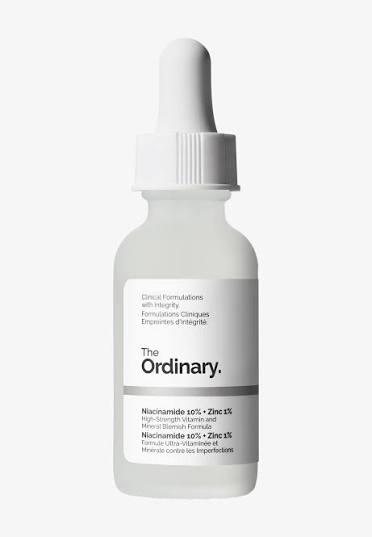

Dit serum is al jaren een favoriet onder jongeren omdat het zowel goedkoop als krachtig is. Niacinamide (vitamine B3) staat bekend om zijn vermogen om roodheid te verminderen, poriën te verfijnen en de huid gladder te maken. Het helpt ook bij het verminderen van donkere vlekjes en ontstekingen. Zink ondersteunt de huid bij het herstel van puistjes en overtollige talgproductie. Hierdoor is het perfect voor studenten die door stress, school of hormonen last hebben van acne of glans.